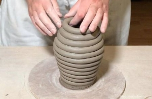
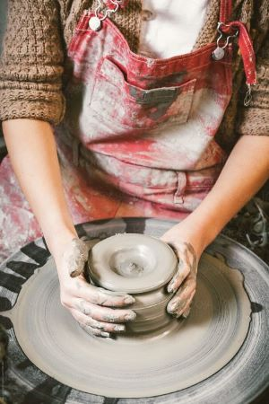

Er zijn ontelbaar veel keramiektechnieken. Zowel voor het creëren van de vorm (b.v. handvormen, draaien,
gieten)
als voor het versieren van de werken (b.v. glazuur en engobe). In deze paragraaf worden een aantal
belangrijke
technieken toegelicht.
Handvormen
Er zijn vele methodes binnen het handvormen van klei. Je kunt met je handen vormen in de klei
bouwen door middel
van bijvoorbeeld het stapelen van rollen klei of platte kleiplaten (Microsoft Academic, z.d.).
Of bijvoorbeeld door
het boetseren met massieve ballen klei door ze bv te knijpen of uit te hollen.
De oproltechniek (coiling): Rol reepjes klei in wormvormige stukken. De maat is afhankelijk van
hoe groot het totale
werk zal zijn. Nadat je de rollen hebt gemaakt, plaats je ze op elkaar en maak er vervolgens één
geheel van door ze
met slip te besmeren. Dit is een van de oudste technieken in de keramiek.

Fig 1. Oproltechniek
Draaien
Ook voor draaien op de draaitafel zijn er vele methodes. De draaischijf wordt meestal voor
pottenbakken gebruikt.
Er wordt gewoonlijk van een proces dat ‘gooien’ of ‘werpen’ heet. Er wordt dan een bal van klei
tijdens het draaien
in het midden van een draaisschijf gegooid. De klei wordt door je handen gevormd terwijl deze in
een cirkelvormige
beweging beweegt door de draaitafel (Microsoft Academic, z.d.).
Het vormen gaat meestal in de volgende stappen:
Centreren: het bereiken van rotatiesymmetrie door het naar binnen en
beneden drukken van de klei. Het belangrijk om de
klei nat te houden.
Openen: Het openen van de de massieve bal klei door een gat in het midden
te creëeren met je duim en maak er vervolgens
een grotere opening van door een of meer vingers in het gat te steken en de klei langzaam
naar je toe te trekken.
Vloeren: Het maken van een bodem in je werk door met je vingertoppen over
elkaar de hele bodem langzaam af te bewegen.
Trekken: Het omhoog bewegen van de wanden en deze vorm geven. Wanneer de
binnenhand meer kracht uitoefent dan buitenhand,
zal de muur naar buiten bewegen. Andersom geldt dat wanneer de buitenhand meer kracht
uitoefent dan de binnenhand, de klei
omhoog en/of naar binnen zal bewegen.
Trimmen: De vorm verfijnen door het verwijderen van overtollige klei en
bewerkingsporen. Hierbij wordt vaak gebruikt gemaakt
van kleigereedschap, zoals lomers en richtlinialen (Instructables craft, 2017).

Fig 2. Draaien
Glazuren
Keramiek decoreren kan op veel verschillende manieren. Denk aan schilderen, glazuren, carving,
polijsten, banding, agateware,
engobe, en nog zóveel meer. Onder dit kopje wordt gefocussed op glazuur en engobe. Glazuur is een
glasachtige substantie die
door middel van bakken op aardewerk wordt versmolten. Het is een mengsel van gemalen glas, klei,
kleurstoffen en water. Glazuur
heeft drie basisfuncties. Ten eerste maakt glazuur aardewerken niet-poreus, waardoor de werken
geschikt zijn voor het vasthouden
van vloeistoffen. Ook geeft glazuur keramiek een steviger oppervlak. Ten slotte dient keramiek voor
decoratie, bijvoorbeeld door
het versterken glazuren de onderliggende textuur of met een geschilderd, gegraveerd of gesneden
ontwerp (Milne, 2021). Glazuur
kan worden aangebracht door te dompelen, spuiten, gieten, borstelen, sponzen of een combinatie van
deze technieken. Wanneer
glazuur gebakken wordt, vinden er allerlei chemische reacties plaats veranderd de kleur van het
glazuur. Er moet dan ook goed
geanticipeerd worden op het feit dat de kleur in de potjes en die na het bakken aanzienlijk
veranderd zijn. Glazuur kan het oppervlak
een glanzende of juist matte, een gladde of juist getextureerde en een ondoorzichtige of juist
doorzichtige afwerking geven (Milne, 2021).